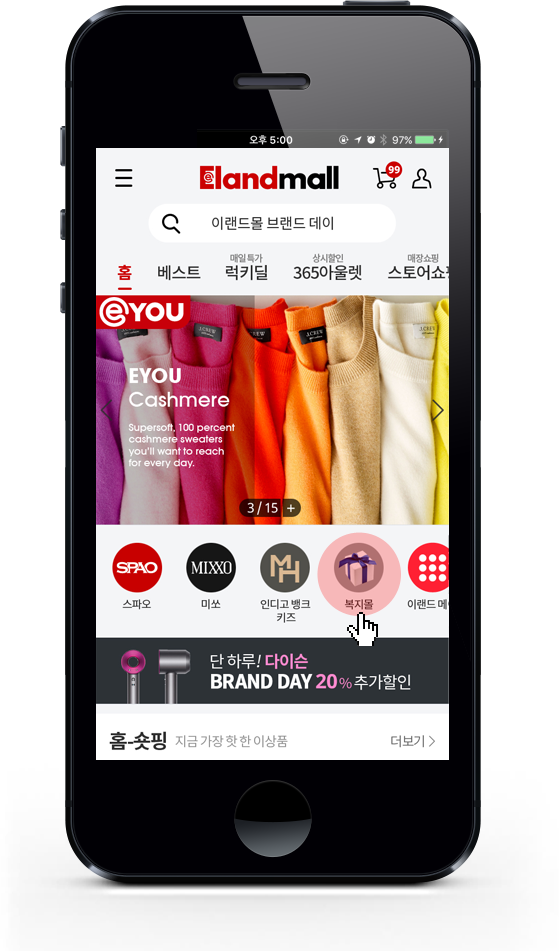
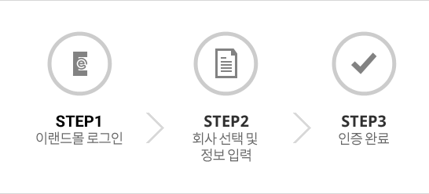
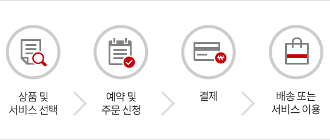

선진형 복지제도(Flexible Benefits Plan)
이랜드그룹에서는 임직원 개인이 자신의 라이프스타일 및 선호도에 따라 자유롭게 복리후생 내용을 선택하는 선진형 복지제도(Flexible Benefits Plan)를 실시하고 있습니다.
이랜드몰에서는 임직원 맞춤형 서비스를 위해 자사부터 특정까지 다양한 상품과 복지서비스를 제공하고 있으며, 취급 상품 및 서비스의 가격 경쟁력 확보를 위해 최선을 다하고 있습니다.
이랜드몰에서 제공하는 임직원 혜택
이랜드몰 내 모든 상품을 복지 포인트로 구매하실 수 있습니다.
또 임직원을 위한 특별 할인 코너인 <복지몰>을 신설해 PB부터 특정까지 다양한 상품을 더욱 저렴하게 구매하실 수 있습니다.
일반 카테고리에서 구매하실 경우 가격 차이가 발생할 수 있사오니, 먼저 <복지몰> 카테고리에서 가격 확인 후 구매하시기 바랍니다.
복지몰 접속 방법
임직원 인증 후 로그인하시면, 복지몰 카테고리를 확인하실 수 있습니다.

사이드 메뉴를 여신 후, 전문관 메뉴 중 임직원복지몰을 클릭하시면 접속하실 수 있습니다.
임직원 이용방법
이가입하신 이랜드몰 아이디로 임직원 인증 절차를 완료해 주십시오.
인증이 완료되면 복지 포인트로 이랜드몰 전 상품을 구매하실 수 있습니다.
Q. 임직원 인증 절차는 어떻게 되나요?
- ①PC로 이랜드몰 로그인 후, 계열사를 선택해주세요.
- ②회사 아이디(@eland.co.kr 제외)와 비밀 번호를 입력해주세요.
- ③인증 버튼을 누르시면 인증이 완료됩니다.
한번만 인증하시면, 다음 방문부터 추가 절차 없이 자유롭게 이용하실 수 있습니다.

Q. 모바일에서도 임직원 복지 제도를 이용할 수 있나요?
네. PC와 동일하게 이랜 드몰 모바일웹 또는 APP에서 이용하실 수 있습니다.
Q. 임직원을 위한 특별할인 상품이 있나요?
임직원 할인 상품은 <복지몰> 코너에 별도로 게시하고 있습니다.
임직원 특가 상품의 경우, 타 카테고리 검색 후 구매 하시면 일반 회원가로 적용되오니, 꼭 복지몰과 비교 후 구매해 주십시오.
상품군은 이랜드리테일 PB부터 특정 상품까지 시즌에 따라 변경될 수 있습니다.
Q. 복지 포인트 소진 후에는 복지몰 이용이 불가한가요?
아니요. 임직원이라면 다른 결제 방법으로도 복지몰 상품을 구매하실 수 있습니다.
정책 FAQ
임직원에게 부여되는 포인트는 얼마인가요?
복지 포인트는 직급에 따라 상이하며, 상반기와 하반기로 나누어 각 50%씩 지급됩니다.
| 직급 |
기본포인트(연단위) |
직급포인트(연단위) |
합계 |
| 임원 |
전 임직원
공통
500,000 |
1,400,000 |
1,900,000 |
| 부장 |
700,000 |
1,200,000 |
| 차장 |
600,000 |
1,100,000 |
| 과장 |
500,000 |
1,000,000 |
| 대리 |
300,000 |
800,000 |
| 주임 |
200,000 |
700,000 |
| 사원 |
100,000 |
600,000 |
| 계약직 |
0 |
500,000 |
정책 FAQ
복지 포인트의 사용 기준 및 지급 원칙이 궁금합니다.
- 1. 지급 기준
- 복지몰 오픈일 기준, 재직자에게만 포인트 부여
- 2. 사용 기준
- 상반기, 하반기에 각 50%씩 지급
- 상반기 미사용 포인트는 하반기로 이월
- 하반기 미사용 포인트는 11월 30일 일괄 소멸
(해당년도에만 사용 가능하며 다음해 이월 불가)
- 타인에게 양도 불가
- 금전적으로 청구 불가
- 3. 신분 변동자 포인트 부여원칙
- 적용 법인간 이동 시, 포인트 연계하여 사용 가능
- 미적용 법인에서 적용 법인으로 이동/ 신규 입사 직원 :
발령일 기준으로 해당 반기에 일할 계산하여 지급
(이랜드몰 임직원 인증 후 지급)
- 적용 법인에서 미적용 법인으로 이동 / 퇴사자 – 발령일 기준으로 포인트 모두 소멸
- 승진자, 정직원 전환자 – 승진 및 전환 인사발령일 기준으로 일할 계산하여 다음 반기에 지급(일괄 지급)
정책 FAQ
기존 법정/기본 복리후생 제도는 어떻게 되나요?
법정/기본 복리후생은 선택적 복리후생 제도(복지 포인트)와 별개로 유지됩니다.
임직원 복리후생
명절 선물 / 생일 선물 / 포상제도
(사업부별 선택사항)
복지 포인트로 전환하여 운영합니다.
법정 복리후생
4대 보험 / 건강검진(기본)
기본 복리후생
경조금
법정 복리후생 및 기본 복리후생 제도는 종전과 동일하게 유지됩니다
결제가이드
이랜드몰은 이랜드 임직원을 위해 다양한 상품을 합리적인 가격에 소개합니다. 복지 포인트 또는 기타 결제 방법을 통해 보다 편리하게 임직원 복지 혜택을 누려보십시오.
결제 프로세스
주문 및 결제내역은 “마이페이지” 에서 확인이 가능합니다.

결제수단
- 1. 복지 포인트
- (1)복지 포인트란 임직원 개인별로 배분된 복지 예산으로 이랜드몰에서 현금처럼 사용하실 수 있습니다.
- (2)결제와 동시에 복지 포인트가 차감되므로, 별도의 차감 절차가 필요하지 않습니다.복지 포인트가 부족할 경우 일반 결제 수단(신용카드, 실시간 계좌이체, 무통장 입금 등)과 혼합하여 사용하실 수 있습니다.
- 2. 일반 결제
- (1)결제 수단 : 신용카드 / 실시간 계좌이체 / 무통장 입금 / 카카오페이 / 페이코
- (2) 결제 방법 : 복지 포인트가 부족하거나 소진되었을 경우 일반 결제 수단을 통해 복지몰 및 이랜드몰 상품을 구매하실 수 있습니다.복지몰은 임직원 특가 코너로 일반 결제로도 구매하실 수 있사오니, 적극 활용 부탁 드립니다.
이랜드리테일 포인트 적립
복지 포인트 사용시에도 이랜드리테일 포인트 적립이 가능합니다.
프로모션 및 쿠폰 할인
복지 포인트 결제 시, 타 프로모션 및 쿠폰과 중복 적용이 불가합니다.